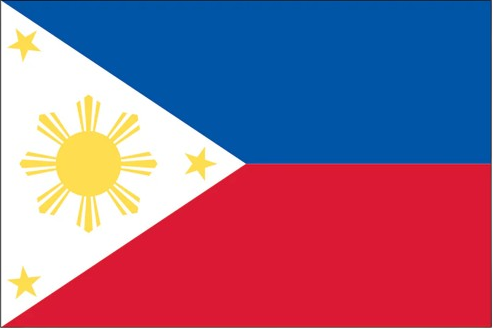

Lady Sheynn Vengco
ABOUT ME
Hi, I'm Lady Sheynn from the Philippines. I am currently pursuing a Certificate in Web and Computer Programming through BYU-Pathway Worldwide and BYU-Idaho while working full-time as a Quality Assurance Specialist and ESL Instructor. My passion for programming began in elementary school and has inspired me to continue developing my skills in web and software development. I enjoy learning new technologies, solving problems, and building solutions that make a positive impact. As I continue my educational and professional journey, I am committed to growing as a developer and creating meaningful digital experiences.

Cebu, Philippines

The Philippines is a vibrant archipelago in Southeast Asia known for its rich cultural heritage, breathtaking natural
landscapes, and warm, hospitable people. With over 7,000 islands, it offers a unique blend of timeless tradition, rich
biodiversity, and modern innovation, making it a dynamic place to live, work, and grow. For professionals and travelers
alike, the country represents a rapidly evolving hub where natural wonders seamlessly coexist with booming urban
environments and creative industries.
At the absolute heart of this narrative is Cebu Island, the country's oldest city and a powerhouse of economic and
cultural activity. Often called the "Gateway to the Visayas," Cebu perfectly encapsulates the essence of the Philippines
by balancing world-class diving spots and pristine white-sand beaches with a bustling, tech-driven metropolis. As a
thriving center for IT, business process outsourcing, and creative design, it has become a magnet for digital nomads and
global businesses—offering a unique lifestyle where you can close a business deal in a sleek skyscraper and be swimming
with whale sharks or relaxing on a tropical beach just a couple of hours later.